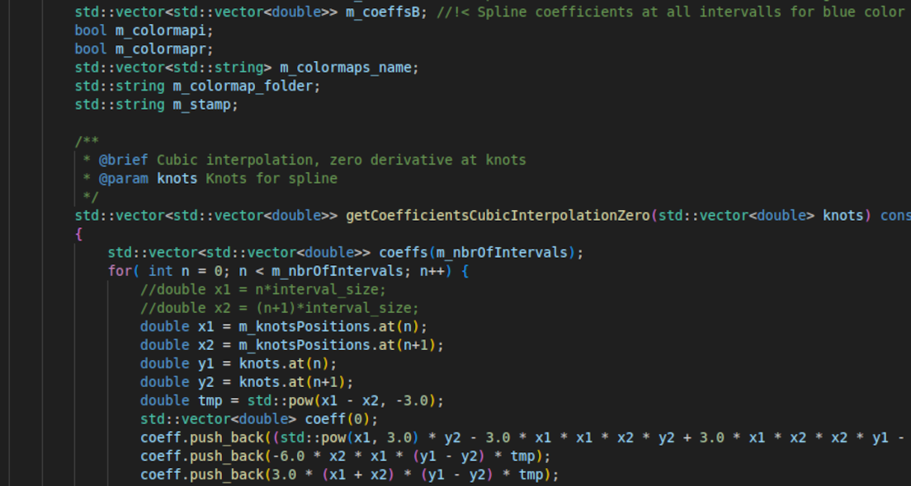
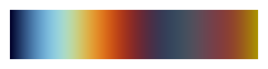
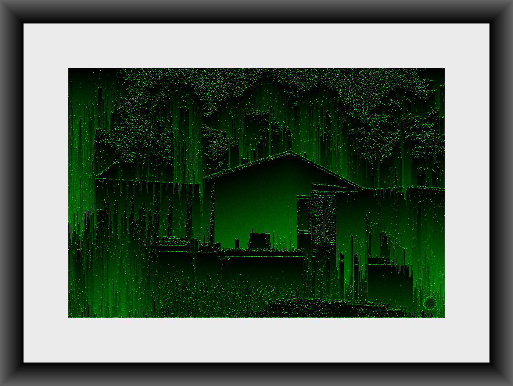

Min process
Jag skapar bilder genom att skriva kod som sedan körs och genererar bilder. Mitt mål är att göra så mycket som möjligt själv från grunden. Detta dels för att jag vill lära mig nya saker i processen men även för att ha kontroll på och veta vad som händer i datorn. Därför har jag från grunden skapat program i programmeringsspråket C++.

Idén jag ursprungligen hade var att skapa verk baserade på matematiska funktioner vilka utgår ifrån slumpade byggstenar. Exempelvis baseras flera bilder på slumpvis genererade punkter och varje pixel i bilden får sedan ett värde baserat på exempelvis avstånd till en punkt eller flera. I sista ledet färgläggs bilden baserat på varje pixels värde och en färgskala, se nedan.

Ett annat exempel på vad jag gör är att förändra bilder på olika sätt, se bilden nedan. Detta gör jag med hjälp av egna fotografier.
